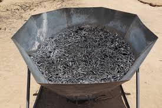
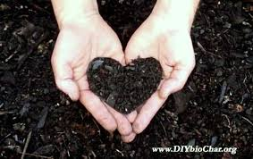

Biochar: The Black Gold Revolutionizing Gardens and Fighting Climate Change
In the quest for sustainable solutions to modern agriculture's and climate change's biggest challenges, sometimes the answer lies buried in ancient practices. Enter biochar, a charcoal-like substance that is rapidly gaining recognition as a powerful tool for enriching soil, reducing waste, and sequestering carbon from the atmosphere.
What Exactly is Biochar?
Biochar is the product of a process called pyrolysis. It involves heating organic materials—such as wood chips, crop residue, and manure—in a low-oxygen or oxygen-free environment. Unlike simple burning, which releases most carbon into the air as carbon dioxide, pyrolysis locks the carbon into a stable, solid form. The result is a black, highly porous material that looks a lot like common charcoal but is produced with the specific intention of being added to soil.
A Powerful Tool for Carbon Sequestration
One of the most exciting aspects of biochar is its ability to act as a carbon sink. When plants grow, they absorb carbon dioxide from the atmosphere. When they die and decompose, this carbon is released back into the air. By converting this organic waste into biochar and burying it, we effectively trap that carbon in the ground. Scientific studies have shown that biochar can remain stable in the soil for hundreds, or even thousands, of years. This makes it a significant and long-term method of carbon sequestration, actively removing greenhouse gases from the atmosphere.
From Waste Product to Wonder Material
Modern agriculture and forestry generate enormous amounts of waste that often goes unused. Pyrolysis provides a productive and environmentally friendly way to manage this waste. Instead of letting it decompose or burning it in open fields—practices that release CO2 and other pollutants—we can convert it into valuable biochar. As a bonus, the pyrolysis process itself can be a source of clean energy, as it produces a hydrogen-rich synthesis gas (syngas) that can be captured and used as fuel.
Transforming Soil Health and Fertility
Beyond its climate benefits, biochar is a game-changer for agriculture. Its extremely porous structure acts like a sponge, dramatically improving the water retention of soil. This means less water is needed for irrigation, making it invaluable in drought-prone areas. These pores also provide a perfect habitat for beneficial soil microbes, which are essential for nutrient cycling and plant health. By improving soil structure, aeration, and nutrient retention, biochar can lead to healthier plants, higher crop yields, and a reduced need for chemical fertilizers.
A Sustainable Future
Biochar is more than just a soil amendment; it's a multifaceted technology that addresses waste reduction, energy production, and carbon sequestration. As we continue to seek innovative ways to build a more sustainable world, the ancient wisdom behind biochar offers a promising path forward. Supporting its development and adoption is a step towards a healthier planet and a more resilient agricultural system.